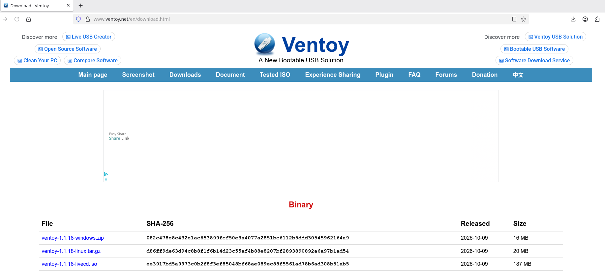
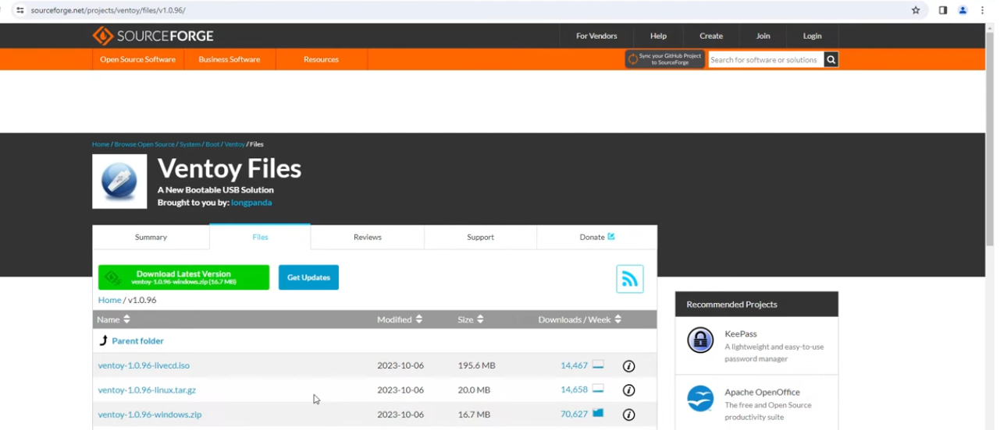
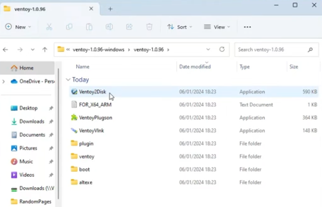
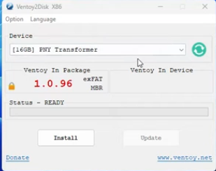
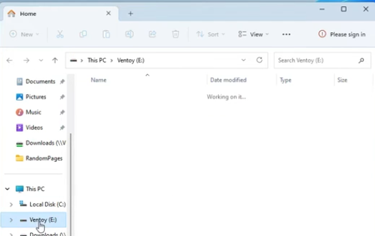

How To Create Linux USB Drives
Introduction
Creating a bootable USB drive for Linux is a straightforward process, but it requires careful attention to detail to ensure that the drive is created correctly. This guide will walk you through the steps to create a Linux USB drive using Ventoy.
What is Ventoy?
Ventoy is a free tool that enables you to add multiple Linux distributions onto a single USB drive.
Steps to Create a Linux USB Drive Using Ventoy
Step 1 - Download Ventoy from the official website

Instructions for Windows users
Go to https://www.ventoy.net/en/download.html and download the latest version for your operating system.

Download the Windows zip file (e.g., ventoy-x.x.xx-windows.zip).
Open Windows Explorer and navigate to your downloads folder.

Right-click the downloaded Zip archive and select "Extract All…"

Open the extracted folder and launch Ventoy2Disk.exe.

Select your USB drive from the Device drop-down menu.

Click install and press to confirm that you want to install Ventoy onto the drive
You will need to confirm for a second time
Using Windows explorer copy the ISO images from your downloads folder to the Ventoy drive.